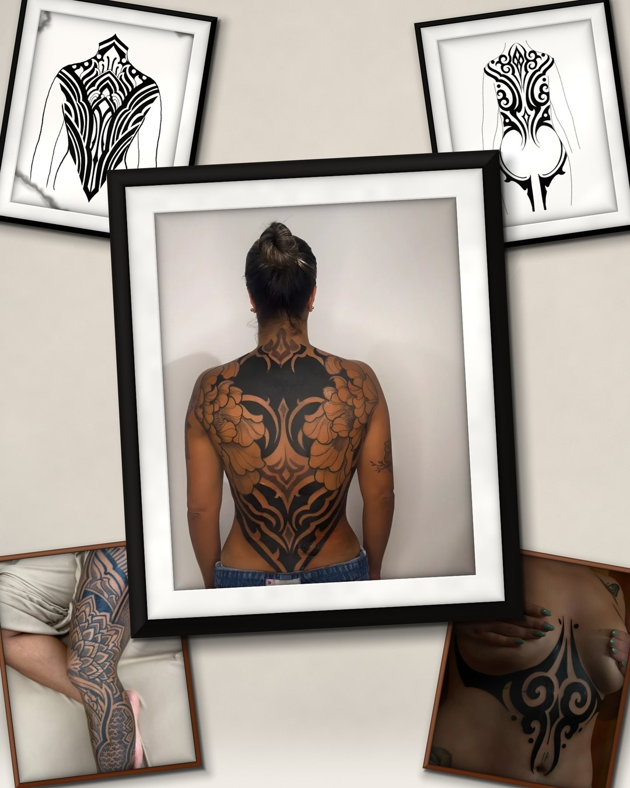
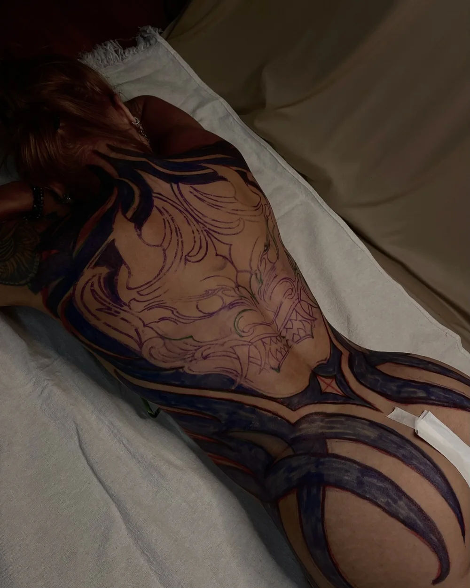
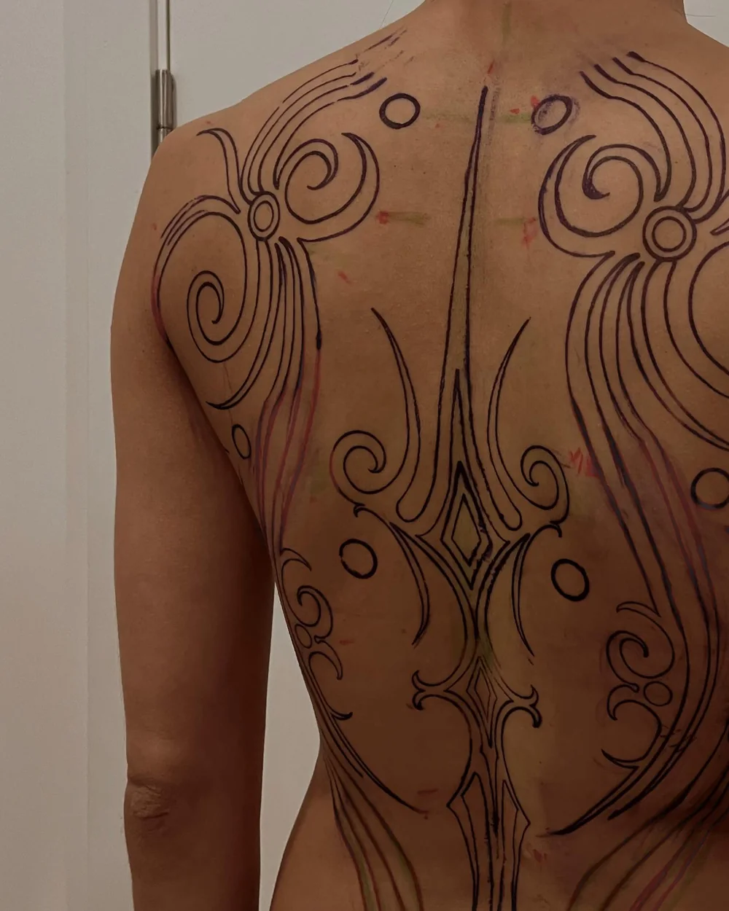
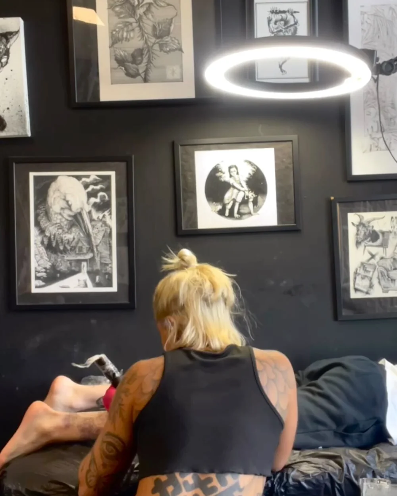
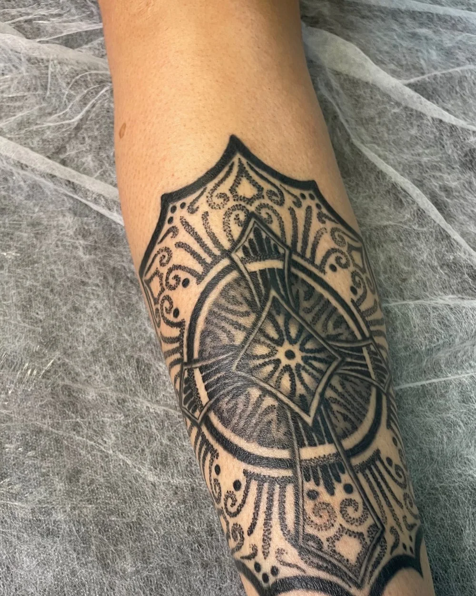
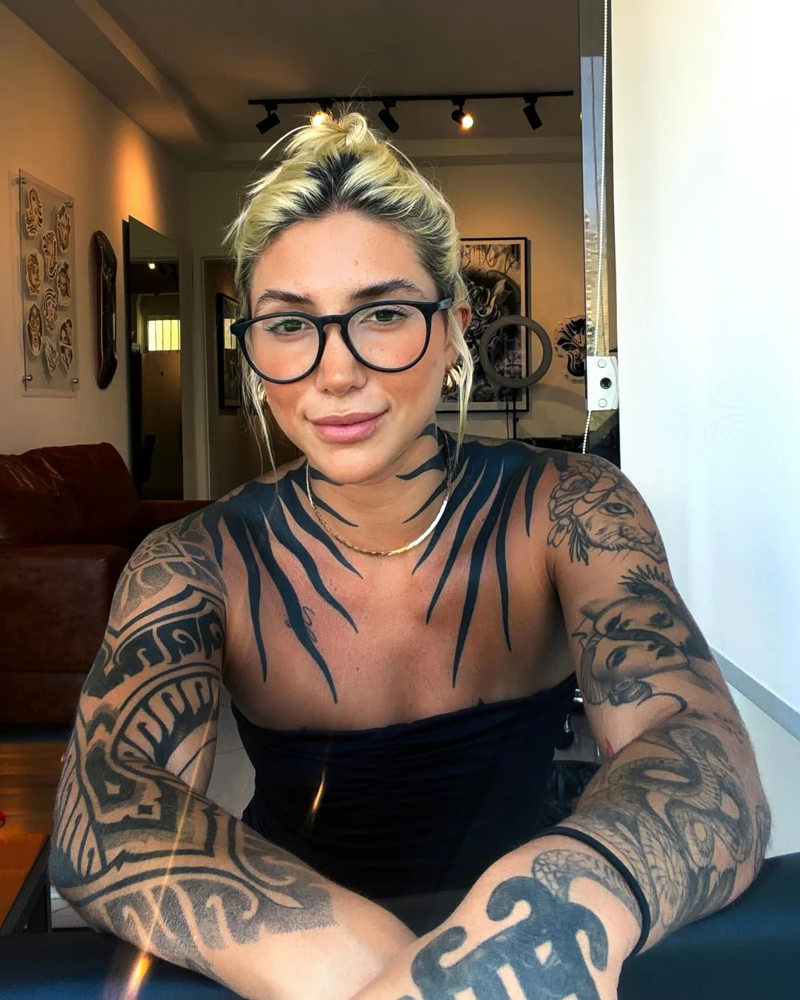
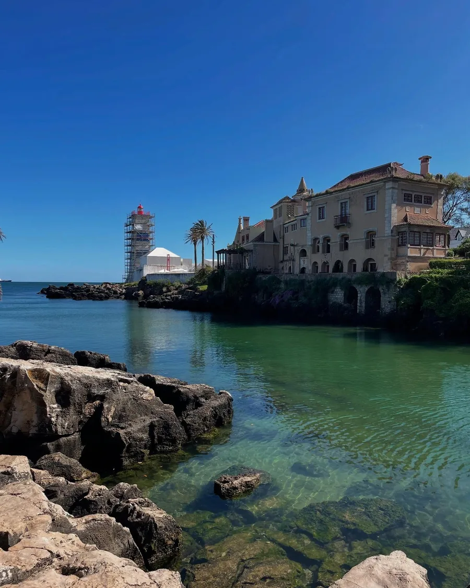
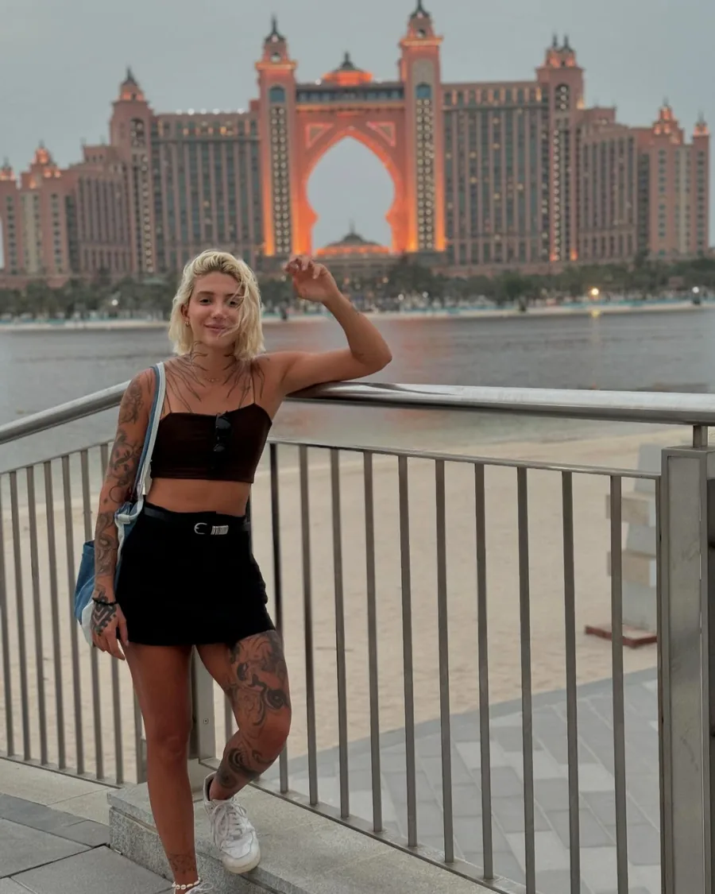

Juliana Mendes, tatuagem ornamental e tribal em Lisboa
Ornamental, tribal e body flow.
Trabalhos
Desenhado para o corpo de cada cliente
Costas, fechamentos de braço e perna, peças no peito e na nuca. Linhas fluidas que seguem o movimento natural do corpo. Toque numa peça para ver em tamanho grande.
Designs disponíveis
Projetos prontos, esperando a pele certa
Cada design já nasce pensado para um lugar do corpo. Escolha um e o pedido segue com ele, ou traga a sua ideia para um projeto só seu.
Processo
Do desenho na pele à peça cicatrizada
Os projetos grandes são desenhados à mão livre, direto no corpo, e construídos sessão a sessão.

Desenho no corpo
O projeto é desenhado à mão livre, direto na pele, seguindo o movimento do corpo.

Linhas e estrutura
Primeiro vêm as linhas, que dão a estrutura da peça inteira.

Sessões
Peças grandes são feitas em sessões, com o preenchimento construído aos poucos.

Cicatrizada
Depois de cicatrizada, a peça fica firme e acompanha o corpo.

Sobre
Juliana Mendes
Sou tatuadora brasileira, baseada em Lisboa e residente no Queens of Hearts. Trabalho com ornamental, tribal e body flow, quase sempre em peças grandes: costas, fechamentos de braço e perna, peito e nuca.
Cada projeto é pensado para a anatomia de quem vai usar. Desenho à mão livre, direto no corpo, para que as linhas acompanhem o movimento natural de cada pessoa.
“Linhas fluidas que seguem o movimento natural do corpo.”
Agenda
Base em Lisboa, agenda pelo mundo
Além de Lisboa, abro agenda em turnês pela Europa, no Brasil e em Dubai. As datas de cada cidade saem no Instagram.

Lisboa
Base fixa, no Queens of Hearts.
Europa
Porto, Paris, Amsterdã, Berlim, Frankfurt, Barcelona, Londres e Dublin.
Brasil
Rio de Janeiro, São Paulo, Floripa e Bahia.

Dubai
Temporadas com agenda própria.
Orçamento
Conte a sua ideia
O pedido chega pronto no WhatsApp, com o estilo, a cidade, o local e o tamanho. Respondo com o orçamento em até 24 horas.
Detalhes
Sua ideia, referências, o local do corpo e o tamanho.
Orçamento
A resposta com o valor chega em até 24 horas.
Data
Escolhemos a melhor data conforme a agenda da cidade.
Sinal
Um sinal garante a data e é descontado do valor final.